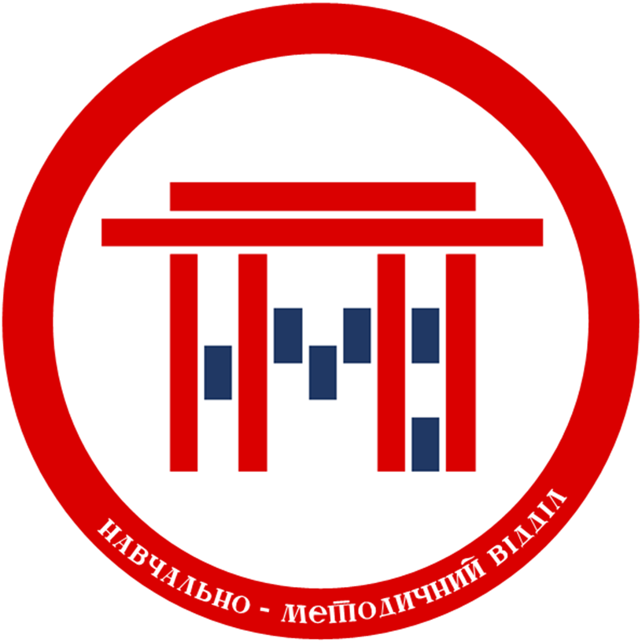
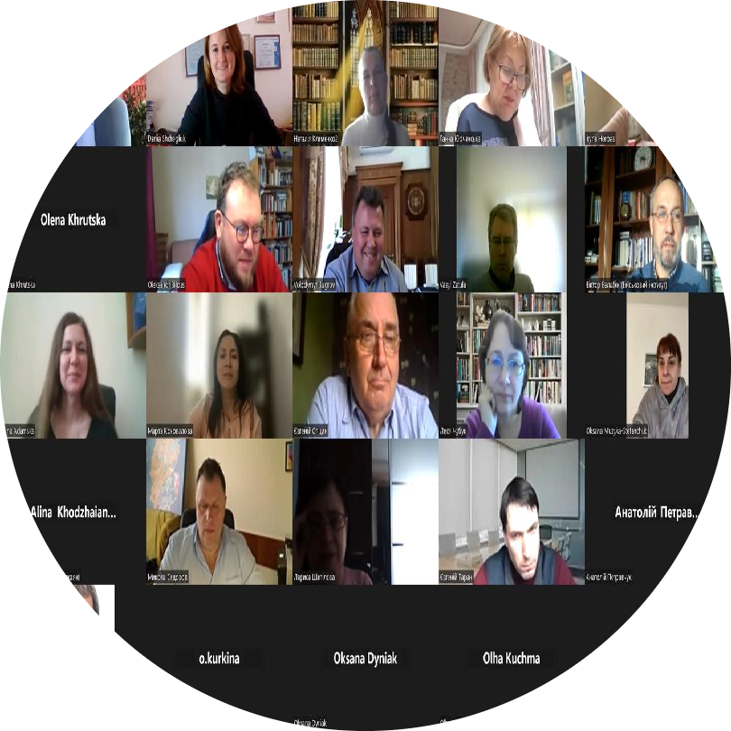
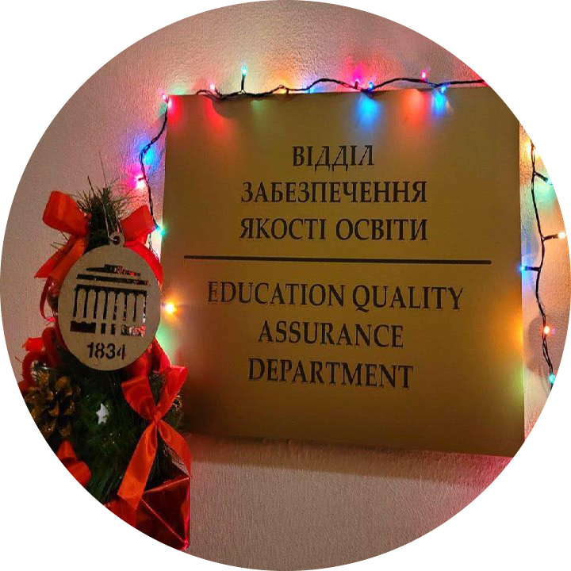
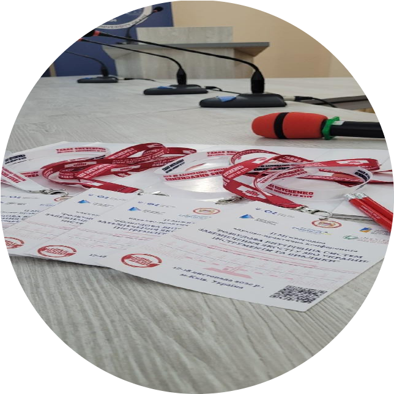

▲
Рекомендуємо перемкнути пристрій у горизонтальне положення
( 🚦 ⤵ 🚥 )
Мене все влаштовує 👌

НОВИНИ
ПРО НАС
ДОКУМЕНТИ
ІНФОРМАЦІЯ
ІНШЕ
Що робить Навчально-методичний відділ?
У сферу наших функцій входить чимало обов'язків.



2-а хвиля навчання за програмою підвищення кваліфікації «Роль гарантів освітніх програм у розбудові внутрішньої системи забезпечення якості вищої освіти».
(17.01.23)
Відділ забезпечення якості освіти щиро вітає з прийдешнім Новим роком!
(17.01.23)
ІІ Міжнародна науково-практична конференція «Розбудова внутрішніх систем забезпечення якості у ЗВО: інструменти та виклики».
(17.01.23)
➡ До інших новин ➡
Залишилися питання? Хочете дізнатися про нас більше?
Скануйте наші контакти або натискайте для переходу за посиланнями: